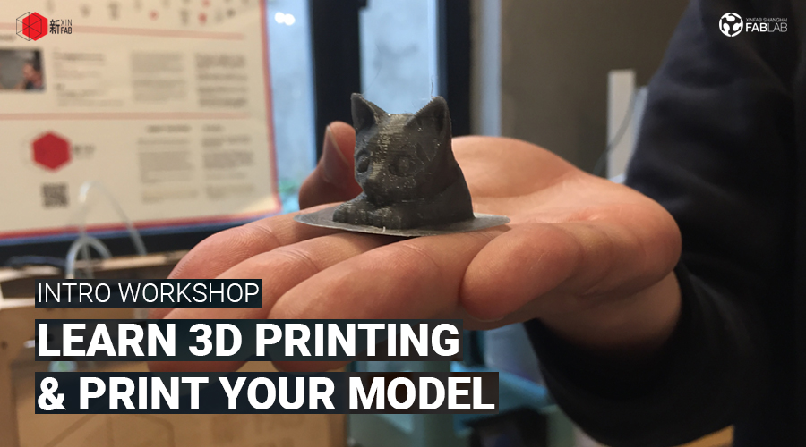
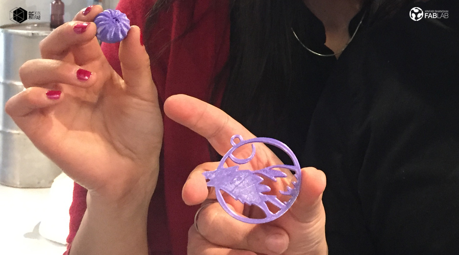
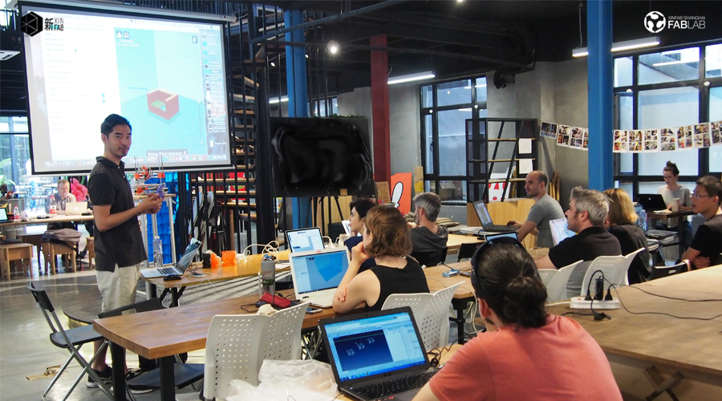
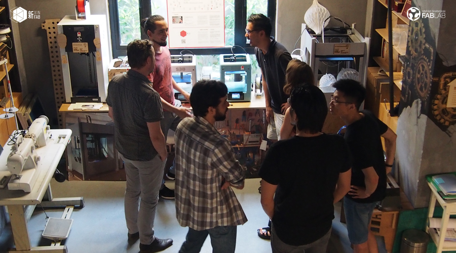

WORKSHOP
LEARN 3D PRINTING & PRINT YOUR OWN MODEL | 学习3D打印和打印您自己的模型

When:Saturday, June 10, from 3pm to 6pm
Where: Xinfab - 665,Changhua Road, Jing'an District, Shanghai (DT Space)
Price: 150 RMB (3 hours workshop)
In this workshop you’ll become familiar with 3D printing technology and the materials you can use.
You’ll understand how to prepare your 3D model file for printing, how to judge whether a model is printable or not, and how to optimize settings so that you get the best out of your print.
Finally, you’ll get to print* your model (scaled down) and take it home with you!
*The success of your print largely depends on your 3D model (.STL). Most files on thingiverse.com are printable, but not always. Make sure your model is a solid object!
Things you should bring:
// Your laptop and charger
// Please install Cura (version 15.04) before you come! (download here: https://ultimaker.com/en/products/cura-software/list )
// If you don't have a 3D model, download an STL file from www.thingiverse.com (you will print one piece - make sure it's not something you need to assemble)
// Your passion, curiosity, and questions
Price includes:
// PLA material for your print



WORKSHOP SCHEDULE
// STEP 1: The past, present, and future of 3D Printing
_3D printing technology and machines
_Materials for 3D printing
_Applications of 3D Printing
// STEP 2: Overview of Cura software and howto slice 3D models
_How to judge whether a model is printable or not
_How to optimize the settings for higher quality and fasterprints
_Possible problems and solutions
// STEP 3: Practice 3D Printing
_Test and print a small model. Printing the model should take 10-15 minutes so everyone has a chance to print out their models
_Troubleshoot and solve issues that come up during the printing process
_Quick introduction on how to build 3D models
///////////////////////////////////
HOW TO SIGN UP
// Alipay
Transfer the workshop fee to pay@xinfab.com (please indicate your phone number on the payment details so we can contact you!)
Questions? Can't pay via Alipay? Send an email to info@xinfab.com.
///////////////////////////////////
ABOUT THE TEACHER

Yuruky is a chinese digital maker since he worked at Xinfab as our former space manager. He has since moved on to work in the film industry as a film critic but continues to be a Xinfabber at heart and help out whenever he can.
时间:：6月10日星期六，15:00 - 18:00
地点： 新Fab - 上海市静安区昌化路665号（DT空间）
价格： 150元 (3个小时）
在这个研讨会中，您将熟悉3D打印技术，您可以使用的材料，并了解3D打印适合我们当今和未来的世界。
您将了解如何准备3D模型文件以进行打印，如何判断模型是否可打印以及如何优化设置，以便从打印中获得最佳效果。
最后，你将打印*你的模型（缩小），并带它回家！
您的打印的成功很大程度上取决于您的3D模型（.STL）。 thingiverse.com上的大多数文件都是可打印的，但并不总是可打印的。 确保你的模型是一个坚实的对象.
需要带上
// 笔记本电脑及其充电器
// 请先安装好Cura软件（下载地址：https://ultimaker.com/en/products/cura-software/list)
// 如果您没有3D模型，请从www.thingiverse.com下载STL文件（您将打印一张 - 确保它不是您需要组装的东西）
// 你的热情、好奇心和问题
///////////////////////////////////
工作坊流程
// 第1步：3D打印的过去，现在和未来
_3D打印技术和机器
_3D打印材料
_3D打印应用
// 第2步：Cura软件概述和如何切割3D模型
_如何判断模型是否可打印
_如何优化设置以获得更高的质量和更快的打印
_可能的问题和解决方案
第3步： 练习3D打印
_测试和打印一个小模型。 打印模型需要10-15分钟，这样每个人都有机会打印出他们的模型
_排除故障并解决在打印过程中出现的问题
_快速介绍如何构建3D模型
///////////////////////////////////
如何注册
// 支付宝
车间费转移到pay@xinfab.com（请在付款明细上注明您的电话号码，以便我们与您联系！）
有问题? 不能通过支付宝付款？ 发送电子邮件到 info@xinfab.com.
///////////////////////////////////
关于教师
Yuruky是一名中国数字制造商，因为他曾在新fab担任我们的前任空间管理。 他已经转移到电影界的电影评论家，但是继续是一个新fabber - 他每次有机会就来快乐地帮助我们。